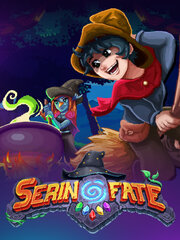

Serin Fate
Serin Fate
Detalles
|  | |
| Tiempo de juego | No Jugado |
| Última actividad | Nunca |
| Añadido | 30/08/2023 9:58:46 |
| Modificado | 30/08/2023 10:02:14 |
| Estado de finalización | Not Played |
| Librería | Steam |
| Fuente | Steam |
| Plataforma | PC (Windows) |
| Fecha de lanzamiento | 25/08/2021 |
| Puntuación de la Comunidad | 72 |
| Puntuación de la Crítica | |
| Puntuación de usuario | |
| Género | Adventure Casual Indie RPG |
| Desarrollador | Vethergen |
| Editor | Crytivo |
| Característica | Full Controller Support Single Player |
| Enlaces | Punto de encuentro Discusiones Guías Noticias Página de la tienda PCGamingWiki |
| Tag | Action-Adventure Adventure Casual Colorful Crafting Creature Collector Exploration Fantasy Farming Sim immersive-sim indie Magic Nonlinear Open World Pixel Graphics Replay Value RPG Sandbox Singleplayer Top-Down |
Descripción

A hand-crafted fantasy RPG that delves deep into the churning depths of Magic.
Explore a retro-inspired world bustling with rich story, unique mechanics, and fearsome Monsters!
Encourages an adventurous spirit and offers greater difficulty to the brave who seek it.

Main Features
- Sprawling and large world.
- Epic storyline and narrative.
- Use of Magic and Spell casting.
- Capture 50 species of Familiars.
- Train, tend & level your Familiars to defeat formidable Monsters.
- Hone skills, spend points, and choose a perk path.
- Complex stats, calculations & combat build diversity.
- Pursue a deeper relation with NPCs and unravel their stories.

Sub Features
- Craft all assortments of weapons, trinkets, armor, edibles and furniture.
- Find side tasks and Witchery errands.
- Grow a sprouting potion garden.
- Timing events, day night cycle, and weather patterns.
- Choose to play Serin, Val, or Human and customize your character.
- Hard Mode: With greater risk & reward.

Evil is afoot...
Wielding your new Magic, bound into mysterious Monster-infested lands to uncover ancient relics and restore the Fate Stone. Along the way, explore the depths of every nook to find creatures, garner ingredients, train in Witchery, and craft new equipment.
Moments before its destruction, by the hands of evil, the Fate Stone imbued you with Magic. Now it’s time to learn some Witchery, armor up, and aid Princess Starwen in finding the lost Shards of Fate.
It’s dangerous to go alone… Take your battle-worthy familiar, some unique friends, and wits for adventure! Or spend your days around town running errands for the Witches Guild, fishing, tending your familiars, and shaping up a potion garden.


Serin Fate is riddled with secrets, hidden depths, and deeper complexities in combat, exploration, items, and stats.
A Sun Amulet that slows time during the day, or a ring that bites Monsters who attack you? Yup.
Entertaining those fleeting "I wonder..." thoughts will aid your quest!

Talk with Developer: http://discord.gg/Qn58N92